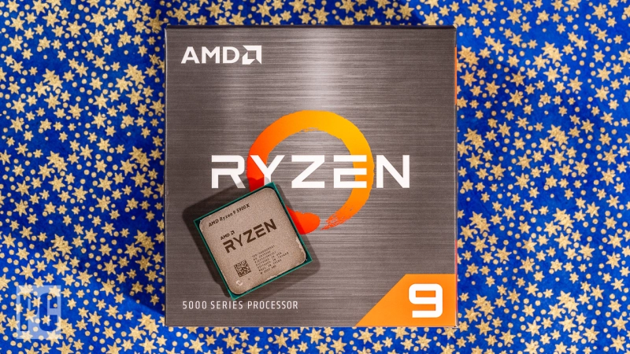
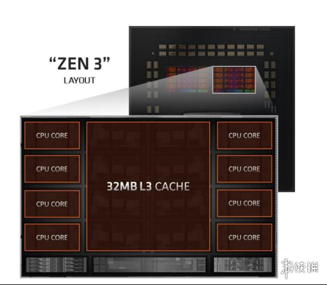

一点文章
锐龙5900X评测：默秒全
随着今年5月英特尔酷睿i9-10900K夺得 "史上最快游戏CPU "的桂冠，AMD在发布Ryzen 9 5900X时有一个很大的目标：在性能上取代君主，并且用更少的钱做到这一点。该公司只达到了其中一个目标，但这已经足够了。在我们的测试中，12核的AMD Ryzen 9 5900X (549美元)是我们迄今为止见过的最快的主流平台游戏CPU，同时在内容创建和生产力工作中经常击败英特尔的竞争芯片。AMD推出的Zen 2的任何枝节现在都已经被缝合，新的Zen 3架构表明，在工艺和设计上的一点改进可以在桌面处理器的世界里走很长的路。在2020年底这里，如果你想要500元左右的最快处理器，几乎所有的东西都可以用，那么妥协是不可能的。AMD就是这样，获得编辑选择奖的Ryzen 9 5900X会让硬核游戏玩家和积极的内容创作者激动不已。如果它是500美元，它将是五星。

他们也是非常坚实的价值芯片。但是，虽然AMD在内容创建任务上表现出色（主要是由于提供了更多的核心和线程），但原Zen 2设计中芯片之间的延迟增加，导致游戏结果比希望的要慢。这种游戏性能上的轻微滞后，在大多数用户会玩的分辨率下尤为重要。
1,920×1,080像素（1080p）。这一切让AMD的Zen 2 Ryzens无法完全占据优势。
AMD宣称其工程师在从Zen 2到Zen 3的过程中实现了高达19%的IPC提升，它表示这一任务是通过改进之前架构的几乎每一个方面来完成的。从分支预测到缓存预取和缓存的大小，所有的东西都被调整了，还有很多。
Zen 3发布会上另一个值得一提的方面是目前公布的四款芯片相对于英特尔同类产品的成本。与488美元（549美元街货）的10核/20线程的英特尔酷睿i9-10900K相比，除了 "哎哟！"之外，没有什么可说的。虽然488美元从技术上讲比549美元少，但这是英特尔的RCP定价，只有当你一次购买一千台或更多时才会启动。否则，预计你要为酷睿i9-10900K支付的价格与你从零售商或电子零售商处购买Ryzen 9 5900X的价格大概相同：549美元。在撰写本文时，一些零售商的i9价格甚至更高，在550美元至600美元之间。
有了Ryzen 9 5900X，以及我们从Ryzen 7 5800X上看到的结果，AMD不必再接受任何战线上的第二名奖牌。随着游戏领域的最后一搏，AMD已经巩固了自己的地位，在2020年即将到来之际，对于任何想要在桌面处理器中获得峰值价值的人来说，AMD是最佳选择。

说了这么多。在我们眼里，Ryzen 9 5900X，就像它的后继者3900X一样，如果你只是为了游戏而购买它，那么它仍然是过度的。在原始基准的基础上，这些芯片显然是强大的，毫无疑问。但是，你是否真的需要这么大的功率是一个辩论，最好留在你和你的月度预算之间。
对于预算紧张的1080p或1440p的游戏，我们仍然建议拿起恒星Ryzen 3 3300X，并将差额花费在你的GPU或高刷新显示器上，而不是。但对于那些只想要最好的、最快的人来说，Ryzen 9 5900X在内容创建任务中提供了极致的性能，同时也打破了我们在CS:GO等游戏中的许多最高速度记录。
Ryzen 9 5900X证明了，通过Zen 3，AMD终于达到了不妥协的地步。它是在火车头的控制下。无论是价格、性能、还是新技术，或者是它们的一些组合，整个Zen 3堆栈在未来的道路上为台式电脑市场带来了巨大的希望。我们非常期待看到这些轨道接下来的发展方向。